7210B10 R.R. CENTRE PILLAR
- Path
- Procedures > 72 PANELS AND FRAME > 7210 REMOVING REFITTING > 7210B structure elements-central and rear part > 7210B10 R.R. CENTRE PILLAR
- Kind
- repair procedure (removal / refitting; the operation number is the code)
- Applies to
- all engines; all production periods
- Interactive page
- https://sloeber94.github.io/elrnDB-fMltpl/en/#/2892310
Applies to: all engines; all production periods
 Removing
Removing
 Refitting
RefittingRaise the floor carpet.
Move all fouling parts.
Check if any of the connected parts are deformed by checking body alignment dimensions. Use appropriate measurement tools (reference rigs, templates or gauges).
Straighten the body if necessary.
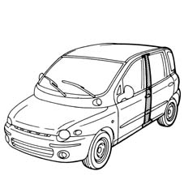
Applies to: all engines; all production periods
Remove the PVC treatment from the door sill using a pneumatic knife and appropriate blade.
1. Use a rotary brush to clean the panel edges in order to expose the spot welds.
2. Undo the bolts (2a) and remove the rear door hinges (2b).
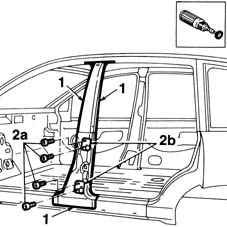
Applies to: all engines; all production periods
1. Use a circular saw to follow the cutting lines shown in the figure.
2. Remove the pillar
3. Drill out weld points in the areas shown in the figure.
Use a chisel and mallet to remove spots drilled previously.
4. Remove the edge of the inner reinforcement.
5. Use a chamfering machine to remove the spots shown in the figure.
Use a hammer and chisel to remove the inner reinforcement scrap.
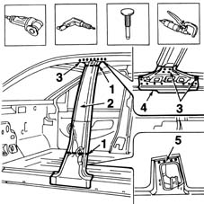
Applies to: all engines; all production periods
1. Use a chamfering machine to remove the weld spots shown in the figure.
2. Drill out the spot welds shown in the figure.
Use a chisel and mallet to remove spots drilled previously.
3. Trim off the pillar scrap.
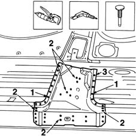
Applies to: all engines; all production periods
Straighten the car edges using a mallet and profiled stake.
Use a grinding wheel to remove the spot weld residues.
1. Make two holes in the area shown in the figure.
Use a rotary brush to clean treated areas.
2. Apply electroweldable paint finish around the newly-treated edges.
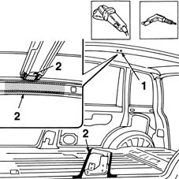
Applies to: all engines; all production periods
Refitting
Removing1. Drill holes in the part at the points shown.
Use a rotary brush to remove the corrosion-proofing from around the entire edge.
2. Use electroweldable paint on the newly-treated edges.
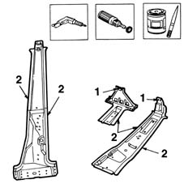
Applies to: all engines; all production periods
1. Position the central pillar (1a) correctly on the car and secure it with Parker screws or some spot welds (1b).
2. Fit the rear door hinges.
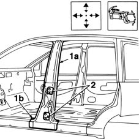
Applies to: all engines; all production periods
1. Fit the front door (1a) and rear door (1b).
Check alignment and gaps around the edges, then remove the door.
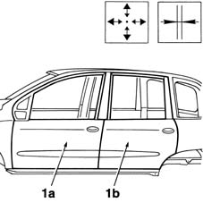
Applies to: all engines; all production periods
1. Fit the upper pillar reinforcement correctly on the car.
2. Use a MIG welder to fill weld the holes made previously.
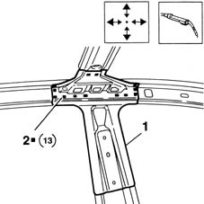
Applies to: all engines; all production periods
1. Fit the inner pillar correctly on the car.
2. Use a MIG welder to fill weld the areas indicated.
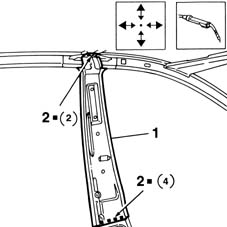
Applies to: all engines; all production periods
1. Use a spot welder to apply a few spot welds to the areas shown in the figure.
2. Use a MIG welder to fill the holes made previously.
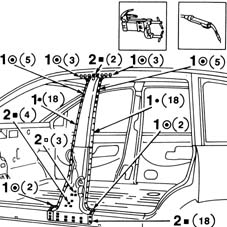
Applies to: all engines; all production periods
1. Correct any deformations in the panel using a profiled stake and mallet.
Use a grinding wheel to level the weld and remove.
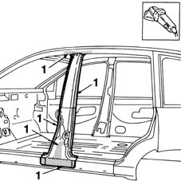
Applies to: all engines; all production periods
1. Apply rust-proofing to newly-welded areas.
2. Seal the joint lines between the part and the car.
Apply paint.
3. Apply wax oil inside the central pillar.
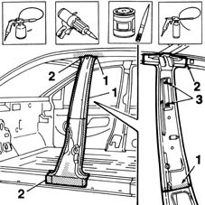
Applies to: all engines; all production periods
Refit the parts moved previously.